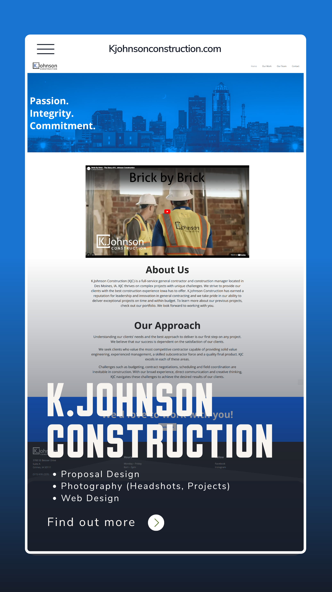
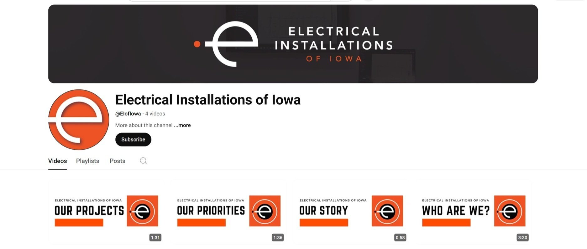
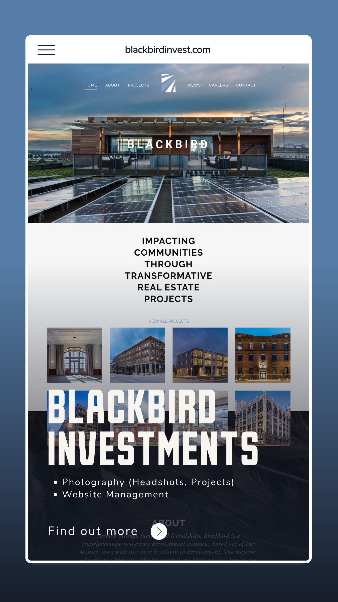
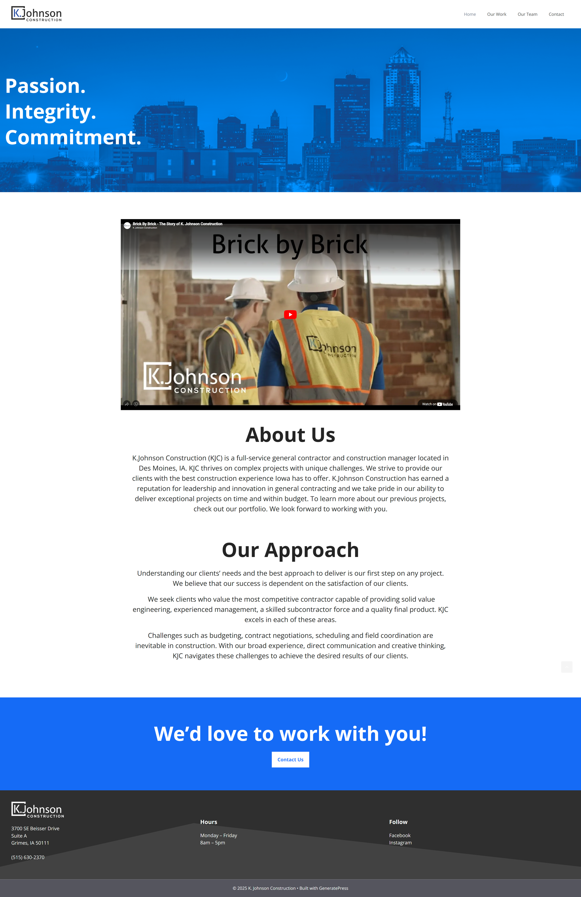
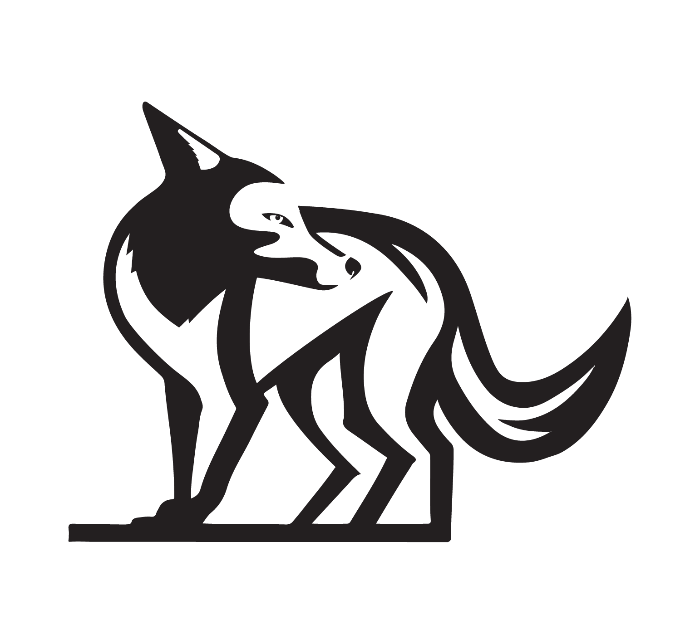
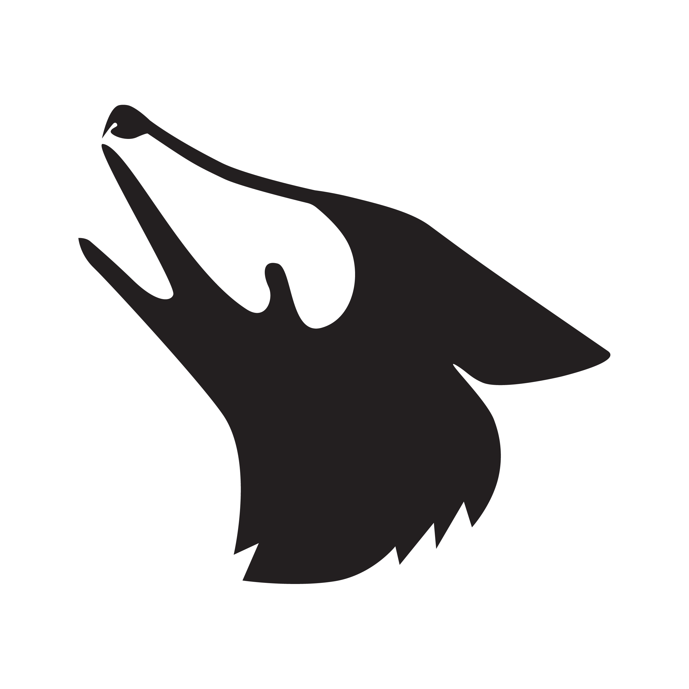

AI Consultation
Opportunity audits, team workshops, responsible-use guidance, prompt systems, and practical implementation roadmaps.
AI consulting + creative production
Jackall Creative helps teams turn AI from scattered experiments into useful operating systems, then ships the websites, content, documents, photography, video, and brand assets that make the strategy visible.
Step 01 / Audit
Review your team, tools, content, documents, approvals, and recurring work. Leave with a ranked opportunity map instead of a pile of AI ideas.
The company model
The updated Jackall message is direct: understand how the business works, design practical AI workflows, and produce the creative assets that help the business get chosen.
Opportunity audits, team workshops, responsible-use guidance, prompt systems, and practical implementation roadmaps.
Repeatable systems for content, proposals, knowledge bases, review steps, approvals, and the work that keeps returning.
Fast static websites, page architecture, migration from Squarespace, SEO foundations, analytics, and launch support.
Positioning, visual systems, social content, proposal design, presentation decks, print media, and sales materials.
Architecture, commercial real estate, construction, headshots, company profiles, YouTube systems, and social clips.
Past work becomes proof
The scraped site includes real case studies, testimonials, project photography, web work, video launches, product visuals, and brand systems. This design brings those examples forward so the AI offer feels earned.

CRM, website, proposals, photography, video, social, events, and brand management.

Website, proposal documents, project photography, headshots, and visual identity support.

Company profile video, YouTube development, headshots, and project photography.

Website management, development photography, progress documentation, and headshots.
Featured case studies
Each case now connects the existing creative services to the new AI-company positioning: the same systems thinking that built websites, proposals, media libraries, and brand assets now extends into AI workflows.
MODUS / Engineering firm
MODUS needed a consistent public presence and a practical way to support business development. Jared led a wide marketing function: CRM implementation, website build and management, RFP and proposal design, brand management, social media, project photography, company profile video, YouTube development, and recurring client-facing events.

K. Johnson Construction / Builder
K. Johnson Construction needed professional visual content, a stronger digital presence, and polished proposal materials that reflected the quality and scale of their work. Jackall designed the website, produced project and team photography, and supported proposal documents used in sales conversations.
Blackbird Investments / Development
Blackbird needed progress photography, final project photography, headshots, and a web presence to organize its digital media. Jackall captured construction progress and finished spaces, supported the original branding process, and helped present the firm's work with polish and consistency.
Design direction
The visual language now uses the approved 2026 logo elements, high-contrast panels, neural connection animation, disciplined grids, and proof-heavy content. It should feel more like an AI company with a creative production muscle, not a generic agency template.

